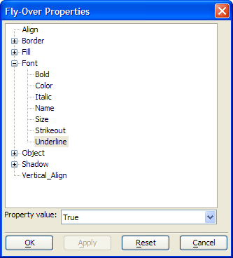

Creating Flyover Effects
Button1, Button2 and Button3 demonstrates the effect of OnFlyover and OnFlyoverLeave events on a button. If you sketch a new button on the CustQueryReport form, you will see that the OnFlyover and OnFlyoverLeave events are already defined to turn the underline attribute of the button's label on and off. This demonstrates the power of stylesheets and the effect of a form's default stylesheet (more about this below).
Procedure: Changing a Button's Text When the OnFlyover Event Occurs
This procedure assumes that the user has opened the CustQueryReport form (in the AlphaSports sample database) in design mode. Follow these instructions to create a button similar to Button2 :
Select the Button tool on the toolbar and sketch the new button.
Enter the label of the button in the Label type-in box.
In the resulting Define Button dialog box accept the default values for Define script for this button now? and Use Action Scripting.
Click the Launch Script Editor button to open the Code Editor.
Click the Select Object button and select the button you are creating from the resulting list.
Click the Select Event button and select the OnFlyover event from the resulting list.
Add the following code on a new line:
|
this.text = "Show No Records" |
Click the Select Event button and select the OnFlyoverLeave event from the resulting list.
Add the following code on a new line:
|
this.text = "Show All Records" |
Click the Save and Close (X) buttons to return to the Form Editor.
Your user may be frustrated with the new button, but it clearly shows how the OnFlyover and OnFlyoverLeave events can be used to change an object's properties.
Procedure: Changing a Button's Style When the OnFlyover Event Occurs
Because the OnFlyover and OnFlyoverLeave styles are associated with the form's stylesheet, they appear automatically for a new button. In this case, we will create a new form that does not have a stylesheet. Follow these instructions to create a button similar to Button2 :
Create a new form.
Draw a new button, label it, and save your results.
Right click the button on your form and select Properties....
Make sure that the Fly-over effects check box is checked, then click the Set Fly-over Appearance button.
Expand the Font properties list and select the Underline attribute.
Note that the Property value field is set to "True".
Any value set here is applied only when the cursor is above the object. When the cursor departs, the regular setting (which is "False") is reapplied.
Click the OK button to return to the Field Properties dialog box.
Click the OK button to return to the Form Editor.

See Also